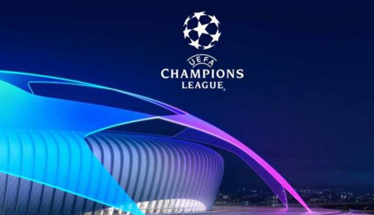

Los Equipos mas ganadores de Europa

La Liga de Campeones de la UEFA, originariamente conocida como Copa de Europa,
es una competición continental de clubes organizada por la Unión de Asociaciones
Europeas de Fútbol, considerada la más prestigiosa del continente europeo.
El Real Madrid es el vigente campeón y el club más laureado de la competición con
trece títulos.El ganador de esta competición, disputa la Supercopa de Europa ante
el vencedor de la Liga Europa y, como representante de la confederación,
la Copa Mundial de Clubes de la FIFA.
Los equipos mas laureados son:
- Real Madrid: Tiene 13 champions league es el Equipo mas premiado en este campeonato
- AC Milan: 7 veces campeon y tiene 4 subcampeonatos
- Bayern Munich: 5 veces campeon pero quedo 5 veces en el segundo puesto
- Barcelona: 5 veces campeon llego 8 veces a la final 3 perdio
- Liverpool: 5 veces campeon y perdio 3 finales